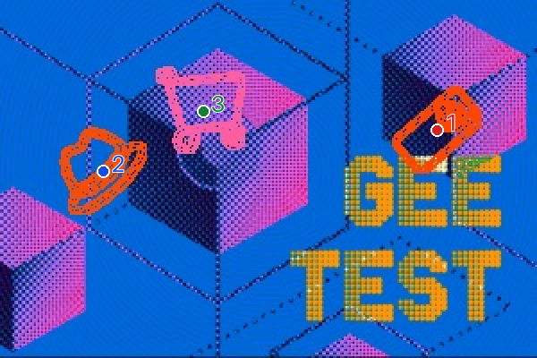

<!doctype html>
<html lang="zh-CN">
<meta charset="utf-8">
<meta name="viewport" content="width=device-width,initial-scale=1">
<title>GeeTest v4 · Python 实际验证记录</title>
<style>
*{box-sizing:border-box}body{margin:0;background:#f1f4f7;color:#17212b;font:16px/1.6 "Segoe UI","Microsoft YaHei",sans-serif}
main{max-width:1140px;margin:28px auto;padding:28px 32px;background:white;border:1px solid #d8e0e8;border-radius:8px}
h1{font-size:27px;margin:0 0 4px}p{margin:6px 0}.muted{color:#596978;font-size:14px}.status{margin:22px 0;padding:14px 18px;border-left:5px solid #6c7986;background:#f1f4f7;font-size:21px;font-weight:600}.status.pass{border-color:#15834d;background:#eaf7ef;color:#116d40}
.layout{display:grid;grid-template-columns:1.5fr 1fr;gap:24px}.main-image{display:block;width:100%;border:1px solid #d8e0e8}.targets{display:flex;gap:16px;margin-top:12px}.target{display:flex;flex-direction:column;align-items:center;gap:3px;font-size:13px}.target img{width:88px;height:88px;object-fit:contain;border:1px solid #d8e0e8;background:white}
pre{white-space:pre-wrap;overflow-wrap:anywhere;background:#f5f7f9;border:1px solid #d8e0e8;padding:15px;font:14px/1.6 Consolas,monospace;margin:0 0 12px}h2{font-size:16px;margin:0 0 10px}.footer{margin-top:20px;border-top:1px solid #d8e0e8;padding-top:13px}.error{color:#a33424}
@media(max-width:850px){main{margin:12px;padding:20px}.layout{grid-template-columns:1fr}}
</style>
<main>
  <h1>GeeTest v4 · Python 实际验证记录</h1>
  <p class="muted">本地运行记录查看器 · 非官方网页界面 · 原始请求、Cookie、密钥和令牌已排除</p>
  <div id="status" class="status">正在读取验证记录…</div>
  <p id="time" class="muted"></p>
  <div class="layout">
    <section><h2>实际题图与提交坐标</h2><div id="targets" class="targets"></div></section>
    <section><h2>服务端响应字段</h2><pre id="response"></pre><h2>提交顺序（原图像素）</h2><pre id="points"></pre><p id="attempts" class="muted"></p></section>
  </div>
  <div class="footer"><p><code>python py/geetest_verify.py --full --attempts 3</code></p><p class="muted">此图只证明该次服务端接受。单次成功不代表稳定通过率；视觉模型的 found / verified 字段不作为服务端成功依据。</p><p class="muted">来源：同目录 verify-success.json。截图由浏览器读取该记录后直接生成。</p></div>
</main>
<script>
fetch('verify-success.json',{cache:'no-store'}).then(r=>{if(!r.ok)throw Error('未找到实际验证记录');return r.json()}).then(d=>{
 const pass=d.server.submitted===true&&d.server.status==='success'&&d.server.result==='success';
 const status=document.getElementById('status');status.textContent=pass?'服务端返回 result = success':'本次未取得服务端通过';if(pass)status.classList.add('pass');
 document.getElementById('time').textContent='执行时间：'+d.started_at+'　·　原图：'+d.main_size.join(' × ')+'　·　耗时：'+(d.elapsed_ms/1000).toFixed(1)+' 秒';
 document.getElementById('response').textContent=JSON.stringify({endpoint:'https://gcaptcha4.geetest.com/verify',submitted:d.server.submitted,status:d.server.status,data:{result:d.server.result}},null,2);
 document.getElementById('points').textContent=d.results.map(r=>'#'+r.index+'  '+JSON.stringify(r.center)).join('\n');
 document.getElementById('attempts').textContent='本次运行：共 '+d.run_summary.total+' 组，实际提交 '+d.run_summary.submitted+' 组，通过 '+d.run_summary.success+' 组。';
 for(const t of d.targets){const item=document.createElement('div');item.className='target';const image=document.createElement('img');image.src=t.file;image.alt='目标 '+t.index;const label=document.createElement('span');label.textContent='目标 '+t.index;item.append(image,label);document.getElementById('targets').append(item);}
 document.documentElement.dataset.evidenceReady=pass?'success':'failed';
}).catch(e=>{document.getElementById('status').textContent=e.message;document.getElementById('status').classList.add('error');});
</script>
</html>
